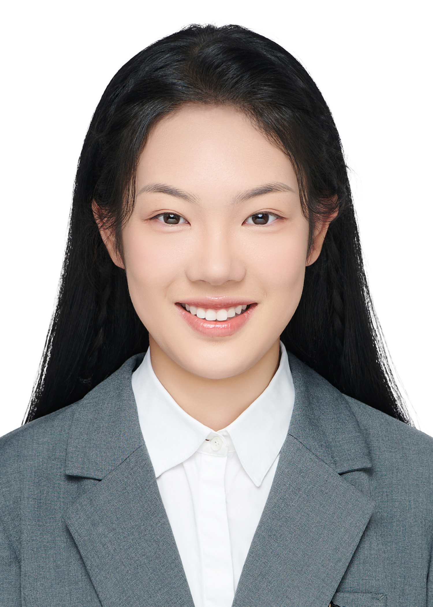

鸿蒙应用开发 · AI 场景创新 · 开源实践
闵敏
上海杉达学院计算机科学与技术本科生，深耕 HarmonyOS 应用与元服务开发，熟悉计算机视觉与机器学习，致力于推动 AI 技术与鸿蒙生态的场景融合创新——代表项目「AI 验衣官」「师遇」。
了解我的故事01关于我
我是闵敏，上海杉达学院计算机科学与技术专业 2025 级本科生。具备扎实的 C、Python 编程基础，深耕 HarmonyOS 应用与元服务开发；熟悉计算机视觉、机器学习与数据分析技术，掌握大模型测试评估，能运用 Codex、AtomCode 等 AI 工具辅助研发，并拥有 OpenHarmony 开源社区实践经验。
我独立完成多款场景化应用项目，具备项目全流程开发落地能力；依托社团实践锻炼统筹与沟通能力，致力于推动 AI 技术与鸿蒙生态的场景融合创新。
- 求职意向
- 鸿蒙应用开发工程师
- 学校
- 上海杉达学院 · 信息科学与技术学院
- 专业
- 计算机科学与技术（本科）
- 学制
- 2025.09 – 2029.06
- GPA
- 3.3
- 籍贯
- 安徽
02专业技能
鸿蒙生态开发
HarmonyOS NEXT 应用与元服务开发；熟悉跨应用流转、元卡片唤起、3D 立体动画渲染等系统能力，具备端侧 HiAI + 云端的端云协同架构实践经验。
AI 与机器学习
卷积神经网络与计算机视觉，随机森林、线性回归等机器学习算法应用；掌握大模型测试与评估、提示词工程。
编程与数据分析
扎实的 C、Python 编程基础；掌握数据集处理、模型训练与评估完整流程；DataEase 可视化数据大屏搭建，完成数据分析闭环。
开源实践与 AI 工具
OpenHarmony 开源社区实践，AtomCode 社区 PR 贡献者；熟练运用 Codex、AtomCode 等 AI 工具辅助研发与办公。
03项目经历
AI 验衣官
2026.01 – 2026.07 中国高校人工智能鸿蒙创新赛 · 初赛入围HarmonyOS NEXT 元服务 · AI 面料识别与上身效果仿真
基于 HarmonyOS NEXT 开发面料识别元服务，解决网购服饰材质造假、图片过度修图等消费痛点。搭建远端 AI 识别 + 元服务轻量化交互架构，实现跨应用闪控球截屏导入、面料视觉特征分析、动态上身效果仿真。
核心能力
深度运用鸿蒙跨应用流转、元卡片唤起、3D 立体动画渲染能力，覆盖从截屏导入到上身仿真的完整体验闭环。
衣镜
智能数字衣橱与 AI 穿搭助手 · 鸿蒙应用
面向衣物闲置、搭配困难的日常穿搭场景开发。实现衣物拍照数字化入库、天气联动 AI 穿搭推荐、AI 虚拟试衣预览；采用端云协同方案——端侧 HiAI 负责图像预处理，云端完成穿搭方案生成。
师遇
无中介的家教双向匹配平台
借鉴招聘平台交互模式的双向家教对接平台：家长端发布家教需求，教师端检索岗位并投递简历；内置实时聊天模块，供需双方直接在线沟通授课事宜。
04证书荣誉
专业认证
- HCIA-AI · 华为认证人工智能工程师 华为
- openEuler（欧拉）认证 工信部证书
- OpenHarmony 开源人才认证 · 中级 OpenHarmony
- 开源鸿蒙应用开发者基础认证 OpenHarmony
- 大学英语四级（CET-4） 语言能力
开源贡献
以代码贡献参与开源鸿蒙生态共建，持续积累开源协作与工程实践经验。
竞赛经历
- 中国高校人工智能鸿蒙创新赛 初赛入围
- 华为 ICT 大赛 参与
- 具身智能大赛 参与
- 鸿蒙高校创新赛 参与
- 鸿蒙 PC 积分赛 参与
05教育经历
上海杉达学院
计算机科学与技术专业 · 信息科学与技术学院。系统学习人工智能、程序开发、工程创新相关课程，掌握 C、Python 等编程语言，完成多项课程综合项目实践。
-
人工智能导论
学习卷积神经网络与计算机视觉技术，基于商汤 AI 平台完成视觉控制智能小车循迹避障、人像追踪项目，掌握数据集处理、模型训练与评估的完整流程。
-
工程认知与创意思维
掌握提示词工程，使用即梦、海螺大模型生成 AI 视频素材；利用 DataEase 搭建可视化数据大屏；开展运动卡路里数据集综合分析，使用随机森林、线性回归等算法构建预测模型，横向对比多种算法与大模型预测精度，完成完整数据分析闭环。
-
分团委 综合社会实践部门队长 · 2025.10 – 2026.06
统筹组织校内外社会实践活动，协调团队分工与资源调配，覆盖参与人数 30 人；主导策划并执行每周末的青少年宫志愿活动，推动活动流程标准化。
06联系我
如果你对鸿蒙生态、AI 应用落地或开源协作感兴趣，欢迎通过以下方式与我交流。